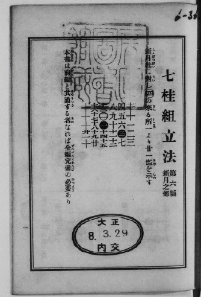
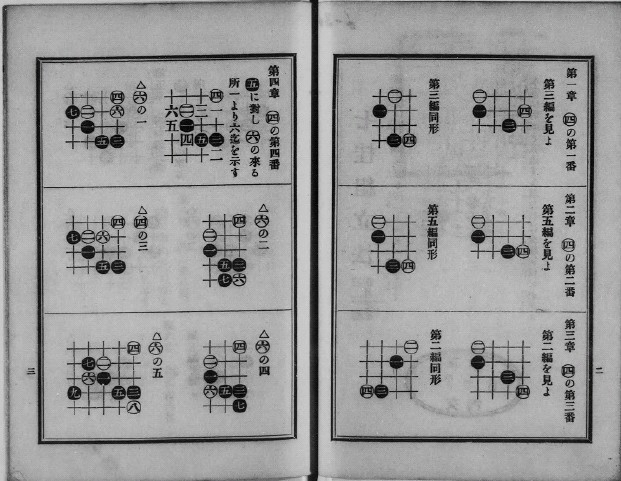
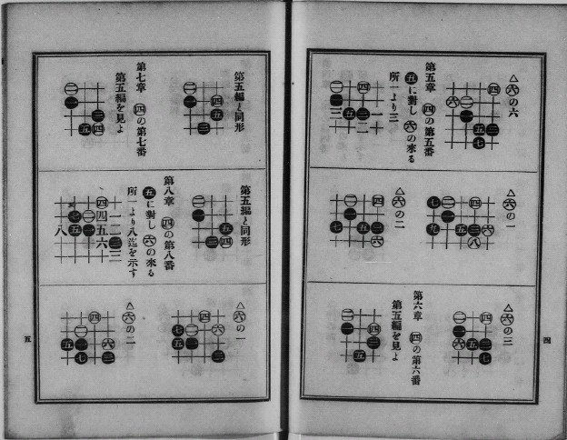
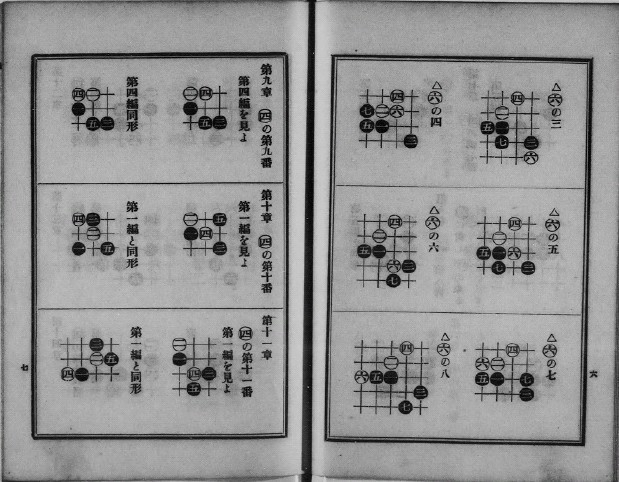
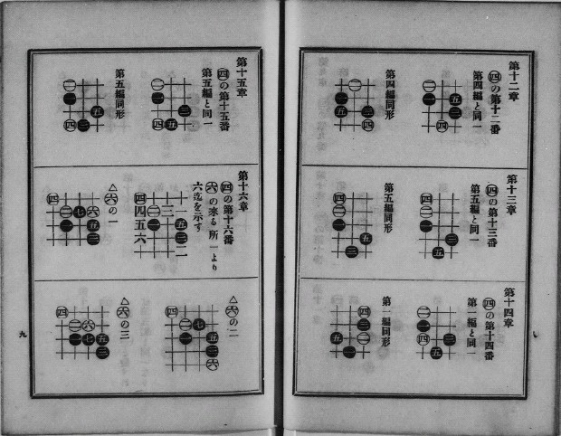
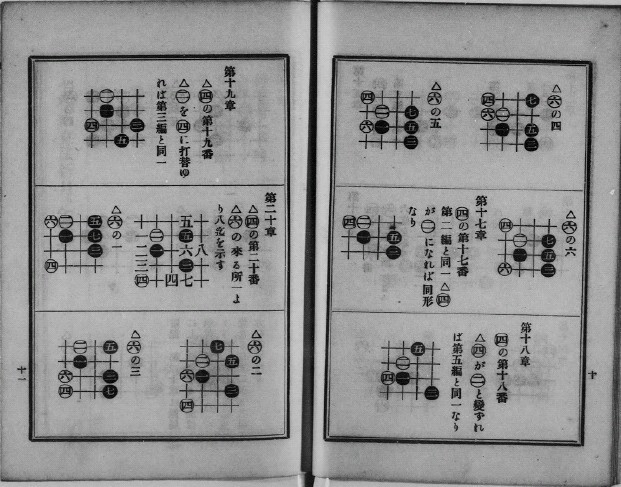
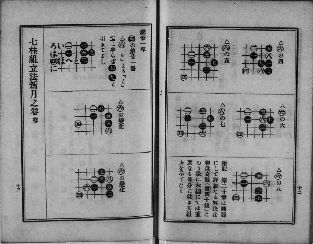
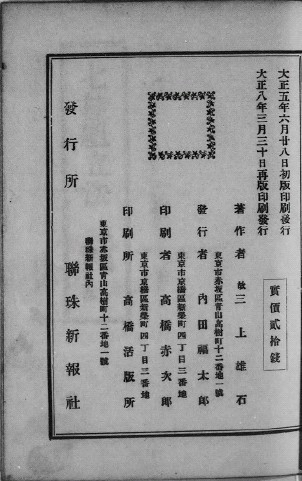

经杰出委托同意，与大家分享日本古书！（系列1：七桂組立法 第6編 新月之部）
#1 经杰出委托同意，与大家分享日本古书！（系列1：七桂組立法 第6編 新月之部） 作者：忧郁的双眼 发表时间：2009-6-6 12:19:04
连珠在进步，研究在更新，所以不要拿09的眼光看90年前的书，这是对前辈的不尊！旨在共享，珍藏，没有杰出的分享，国内很难看到这些书籍！








注：大正：大正天皇嘉仁（たいしょうてんのう よしひと、1879年8月31日～1926年12月25日），日本第123代天皇。明仁天皇之祖父、昭和天皇之父。
明治天皇只有他一个儿子能存活下来，母典侍柳原爱子。父亲死去后，以王世子身份继位，以易经的“大亨以正，天之道也”一句改元大正。成人以后，娶九条节子(贞明王后)为王世子妃。生有四子。即昭和倭王裕仁、秩父宫雍仁亲王、高松宫宣仁亲王、三笠宫崇仁亲王。
他在位初期，经过明治年代的接受西方的文化与思想（明治维新），国家大致平稳发展，加上时值欧洲第一次世界大战，使不少甘愿冒险的外国商人前来日本投资，造成新日本的一片繁华景象，令大正前期为日本自明治维新以后前所未有的盛世。并于当时欧战结束，民族自决浪潮十分兴盛，民主自由的气息浓厚，后来称之为“大正民主”。其浪潮影响到当时为日本殖民地的台湾，遂有林献堂等人发起民族议会请愿运动，争取台湾人民对殖民政治的参政权。
在位后期，由于他未能发挥出他父亲的优点，加上关东大地震等天灾人祸接续而来，被世人称为不幸的大正。由于他患有脑病，精神状态非常糟，曾经在国会议事堂将诏书卷起来当望远镜，这件事以望远镜事件闻名于世。大正十年(1921年)由与其子皇太子裕仁亲王摄政，大正十五年（1926年)十二月二十五日死去，终年四十八岁。
#2 Re:经杰出、名少同意，与大家分享日本古书！（系列1：七桂組立法 第6編 新月之部） 作者：忧郁的双眼 发表时间：2009-6-6 12:21:10
等我重新编辑。。。